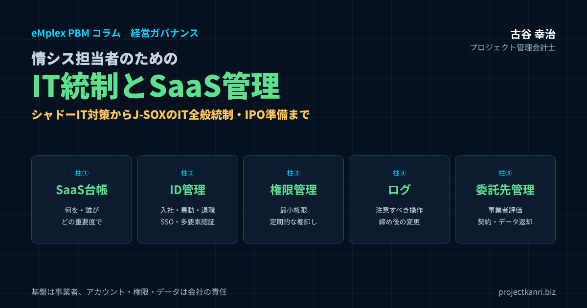

情シス担当者のためのIT統制とSaaS管理―SaaS台帳・ID管理・権限棚卸し・ログ・委託先管理の実務、シャドーIT対策、J-SOXのIT全般統制とIPO準備まで

結論：SaaS時代のIT統制は「台帳・ID・権限・ログ・委託先」の5つで考える
この記事のポイント
- SaaS時代のIT統制は台帳・ID・権限・ログ・委託先の5つの柱で考える
- 基盤は事業者、アカウント・権限・データ・設定・連携・事業者評価は利用する会社の責任
- 最優先はSaaS台帳と退職者アカウントの削除
- 権限は最小権限で付与し、半年〜1年ごとに棚卸し
- 運用の記録が、そのまま監査・IPO準備の証跡になる
プロジェクト管理会計士の古谷です。経営管理の仕組みづくりをご支援していると、最近とくに増えているのが、情報システムの担当者からのご相談です。「部門ごとにSaaSを契約していて、全体が把握できない」「退職した社員のアカウントが残っていないか不安だ」「監査法人からIT全般統制について質問されたが、SaaSの場合に何を示せばよいか分からない」。こうした声を、上場を目指す会社でも、すでに上場している会社でも、頻繁に耳にします。
かつての社内のシステムは、自社のサーバーに置かれ、情報システムの部門が導入から運用までを一手に担っていました。いまは、会計、勤怠、給与、経費精算、請求、プロジェクト管理、顧客管理、チャット、ファイルの共有と、業務の多くがSaaSの上で動いています。SaaSは、導入が早く、運用の負担も軽いという大きな利点があります。その一方で、各部門が自由に契約できるため、会社として、誰が、どのサービスを、どの権限で使い、どのデータを預けているのかが見えにくくなっています。
本記事でお伝えしたいのは、SaaS時代のIT統制を、五つの柱で整理するという考え方です。会社が使っているSaaSを一覧にするSaaS台帳。入社、異動、退職に合わせてアカウントを管理するID管理。必要最小限の権限を付与し、定期的に見直す権限管理。誰がいつ何をしたかを記録し確認するログとモニタリング。そして、サービスを提供する事業者を評価し、契約とデータを管理する委託先管理。この五つを押さえれば、少ない人数の情報システムの部門でも、SaaSを安全に、そして監査に耐える形で管理することができます。
私自身、ITのCRMソフトウェアの会社であるエンプレックスで取締役CFOを務め、ソフトウェアを提供する側と、管理の仕組みを整える側の両方の立場を経験しました。そして現在は、プロジェクト型ビジネスのための経営管理のSaaSを提供しています。その経験をもとに、情報システムの担当者が明日から使える実務をお伝えします。なお、内部統制の業務分掌とアクセス権限の設計の基本については、別のコラム「内部統制の業務分掌とアクセス権限設計」で詳しく解説していますので、あわせてご覧ください。
情シス担当者が直面している変化
情報システムの担当者を取り巻く環境は、ここ数年で大きく変わりました。
| 変化 | 起きていること |
|---|---|
| 導入主体の分散 | 各部門がSaaSを契約し、シャドーITが増える |
| システム数の増加 | アカウント・権限・契約の管理対象が増える |
| データの所在の変化 | 重要データが複数の事業者のもとに保存される |
| 少人数の情シス | 1〜2人や兼務で多くのSaaSを管理する |
一つ目の変化は、システムの導入の主体が、情報システムの部門から各部門に移ったことです。営業の部門が顧客管理のSaaSを、人事の部門が採用管理のSaaSを、現場の部門がプロジェクト管理やファイル共有のSaaSを、それぞれクレジットカードで契約して使い始める。情報システムの部門が知らないうちに、社内で使われているSaaSが増えていく。いわゆるシャドーITの問題です。
二つ目の変化は、システムの数の増加です。一つの大きなシステムではなく、目的ごとの小さなSaaSを組み合わせて業務を回すようになり、管理すべきアカウント、権限、契約の数が大きく増えました。
三つ目の変化は、データの所在の変化です。会社の重要なデータが、自社のサーバーではなく、複数のSaaSの事業者のもとに保存されています。データがどこにあり、誰がアクセスでき、事業者が適切に管理しているのかを、会社として把握する必要があります。
そして四つ目の変化が、情報システムの部門の人員の少なさです。中堅や中小の会社では、情報システムの担当者が一人か二人、あるいは総務や経理の担当者が兼務していることも珍しくありません。限られた人数で、増え続けるSaaSを管理しなければならない。この状況に合った、無理のない管理の仕組みが求められています。
こうした変化の中で、情報システムの担当者の役割も変わってきています。かつては、システムを自ら構築し運用することが中心でした。いまは、社内で使われるSaaSの全体を把握し、ルールと手順を整え、各部門と協力して管理を回す、いわば管理の仕組みの設計者としての役割が求められています。
IT統制とは：全社的なIT統制・IT全般統制・IT業務処理統制
まず、IT統制の基本を整理しておきます。財務報告に係る内部統制の制度、いわゆるJ-SOXでは、ITへの対応は内部統制の基本的な要素の一つとされ、IT統制は大きく三つに分けて考えられています。
| 区分 | 内容 | 例 |
|---|---|---|
| 全社的なIT統制 | ITの管理の方針・体制 | IT管理規程、SaaS導入の承認ルール |
| IT全般統制 | 業務処理統制が機能する環境を保証する統制 | 開発・保守、運用・管理、アクセス管理、外部委託の管理 |
| IT業務処理統制 | 業務システムに組み込まれた統制 | 入力チェック、自動計算、承認ワークフロー |
全社的なIT統制は、会社全体としてITをどのように管理するかの方針や体制です。IT全般統制は、業務処理統制が有効に機能する環境を保証するための統制で、一般に、システムの開発と保守、システムの運用と管理、内部と外部からのアクセスの管理などシステムの安全性の確保、外部委託に関する契約の管理といった領域があります。IT業務処理統制は、個々の業務のシステムの中に組み込まれた統制で、入力のチェック、自動の計算、承認のワークフローなどがこれにあたります。
本記事で扱うSaaS管理は、このうち主にIT全般統制に関わるものです。SaaSを使う場合でも、アクセスの管理、変更の管理、運用の管理、外部委託の管理という、IT全般統制の考え方そのものは変わりません。変わるのは、それぞれの統制を、自社で行う部分と、SaaSの事業者に依存する部分に分けて考える必要がある、という点です。
SaaS時代にIT全般統制で変わること：責任共有の考え方
自社のサーバーでシステムを運用していた時代には、サーバーの管理、ソフトウェアの更新、バックアップ、アクセスの管理まで、すべてを自社が担っていました。SaaSでは、そのうちの多くを事業者が担います。では、会社は何に責任を持てばよいのでしょうか。
| 領域 | 主に担う側 |
|---|---|
| インフラ・データセンター | 事業者 |
| アプリケーションの開発・更新 | 事業者 |
| バックアップの基盤 | 事業者（範囲は契約による） |
| アカウントの発行・削除・権限 | 利用する会社 |
| データの入力・利用・書き出し | 利用する会社 |
| サービスの設定・他システムとの連携 | 利用する会社 |
| 事業者の評価・契約管理 | 利用する会社 |
分担はサービスと契約によって異なります。
SaaSの場合、基盤のインフラ、アプリケーションの開発と更新、データセンターの物理的な安全、バックアップの基盤などは、主に事業者が担います。一方、誰にアカウントを発行し、どの権限を与え、いつ削除するのかというアカウントと権限の管理、どのデータを入力し、どのように使うのかというデータの管理、サービスの設定、他のシステムとの連携の管理、そして事業者そのものの評価は、利用する会社の責任です。
この役割の分担は、サービスの種類や契約によって異なります。大切なのは、SaaSを導入するときに、何を事業者に任せ、何を自社で管理するのかを明確にし、自社の側の管理を確実に行うことです。「クラウドだから事業者がすべて管理してくれる」という思い込みは、最も危険な誤解です。退職した社員のアカウントを削除しなかったために情報が漏れた、という事故は、事業者の責任ではなく、利用する会社の管理の問題です。
そして、事業者が担う部分についても、会社は無関心でいてよいわけではありません。事業者が適切に管理していることを、何らかの方法で確かめる必要があります。これが、後ほど述べる委託先管理の考え方です。
責任の分担を整理するときは、SaaSごとに、事業者の利用規約やセキュリティの資料を確認し、自社が担うべき管理の項目を一覧にしておくと便利です。この一覧は、後ほど述べる委託先管理や、監査への説明の資料としても使えます。
SaaS管理の全体像：5つの柱
SaaS時代のIT統制を、実務で回せる形に整理すると、次の五つの柱になります。
| 柱 | 内容 | IT全般統制との対応 |
|---|---|---|
| ① SaaS台帳 | 利用するSaaSと重要情報の一覧 | 管理対象の把握 |
| ② ID管理 | 入社・異動・退職に合わせたアカウント管理 | アクセス管理 |
| ③ 権限管理 | 最小権限、管理者の限定、棚卸し | アクセス管理 |
| ④ ログとモニタリング | 操作記録の保存と確認 | アクセス管理・運用管理 |
| ⑤ 委託先管理 | 事業者の評価、契約・データの管理 | 外部委託の管理 |
この五つの柱は、IT全般統制の領域と対応しています。SaaS台帳は、管理の対象を把握するための土台です。ID管理と権限管理は、アクセスの管理の中心です。ログとモニタリングは、アクセスの管理と運用の管理が機能していることを確かめる手段です。委託先管理は、外部委託に関する契約の管理そのものです。
五つの柱のうち、最初に取り組むべきなのはSaaS台帳です。何を管理すべきかが分からなければ、他の四つの柱は機能しません。以下、一つずつ見ていきます。
まず整えたいIT管理規程とSaaS利用ルール
五つの柱を運用する前に、その土台となるルールを文書にしておきましょう。全社的なIT統制の中心になるのが、IT管理規程と、SaaSの利用のルールです。
| 文書 | 主な内容 |
|---|---|
| IT管理規程（管理する側） | SaaS導入の申請・承認、データの重要度分類、アカウント・権限管理の基準、ログの確認・保存、事業者評価、役割分担 |
| SaaS利用ルール（使う側） | 認められたSaaS以外に業務データを置かない、パスワード・多要素認証、社外メンバーの招待手続き、退職時のデータ引き継ぎ、生成AIへの入力基準 |
規程には、SaaSの導入の申請と承認の手続き、データの重要度の分類、アカウントと権限の管理の基準、ログの確認と保存の基準、事業者の評価の基準、そして情報システムの部門と各部門の管理の責任者の役割の分担を定めます。
社員向けの利用のルールには、会社が認めたSaaS以外に業務のデータを保存しないこと、パスワードを使い回さないこと、多要素認証を設定すること、社外の人をサービスに招待するときの手続き、退職のときのデータの引き継ぎなどを、分かりやすく書きます。規程は管理する側のためのもの、利用のルールは使う側のためのものと、読み手に合わせて書き分けると、現場に伝わりやすくなります。
規程やルールは、細かくしすぎないことも大切です。少ない人数の情報システムの部門が、守れないほど細かいルールをつくっても、運用が追いつかず、形骸化します。まずは、最も重要な事項に絞ってルールを定め、運用しながら必要に応じて追加していきましょう。
柱①：SaaS台帳をつくる
SaaS台帳とは、会社が利用しているSaaSを一覧にし、それぞれのサービスの重要な情報を記録したものです。SaaS管理のすべての出発点になります。
| 項目 | 内容 |
|---|---|
| サービス名・事業者 | 名称、提供会社 |
| 利用目的・利用部門 | 何のために、どの部門が使うか |
| 管理責任者 | アカウント・権限・契約の管理を担う人 |
| 契約 | 形態、期間、更新時期、費用、利用者数 |
| データ | 保存データの種類（個人情報・機密情報）と重要度 |
| 連携 | 他システムとの連携（API・CSV） |
| 財務報告への関わり | J-SOXの評価対象となり得るか |
| 認証 | SSO・多要素認証の対応 |
台帳には、サービスの名前と事業者に加えて、利用の目的、利用している部門、管理の責任者、契約の形態と期間、費用、利用者の数、保存しているデータの種類と重要度、他のシステムとの連携、そして財務報告に関わるかどうかを記録します。
とくに大切なのが、管理の責任者と、データの重要度です。管理の責任者は、そのSaaSのアカウントの発行と削除、権限の設定、契約の管理を担う人です。情報システムの部門がすべてのSaaSを直接管理するのは難しいため、各部門に管理の責任者を置き、情報システムの部門は全体のルールと台帳の管理を担う、という役割の分担が現実的です。
データの重要度は、そのSaaSに保存されているデータが、個人情報や機密情報を含むか、財務報告に影響するかによって分類します。重要度の高いSaaSほど、ID管理、権限管理、ログ、委託先管理を厳格に行います。すべてのSaaSに同じ水準の管理を求めると、少ない人数では回りません。重要度に応じて、管理の水準にメリハリをつけることが大切です。
台帳は、一度つくって終わりではありません。新しいSaaSの導入、契約の更新、解約のたびに更新する必要があります。SaaSの導入の申請と承認の手続きの中に、台帳への登録を組み込んでおけば、台帳は自然に最新の状態に保たれます。
台帳を最初につくるときは、完璧を目指さないことも大切です。まずは、経費の支払いの記録から分かる範囲でサービスの一覧をつくり、各部門に確認してもらいながら、少しずつ情報を埋めていけば十分です。不完全でも一覧があることと、一覧がまったくないこととでは、管理の出発点が大きく違います。
各部門のSaaS管理責任者の役割
情報システムの部門がすべてのSaaSを直接管理するのは、少ない人数では現実的ではありません。各部門に、SaaSの管理の責任者を置き、日々の管理を担ってもらうのが効果的です。
| 担い手 | 役割 |
|---|---|
| 情報システム部門 | ルールと台帳の管理、手順の整備、重要SaaSの直接管理、定期的な状況確認 |
| 部門のSaaS管理責任者 | アカウントの発行・削除、権限設定、棚卸しの確認、契約更新の判断材料の提供 |
| 人事部門 | 入社・異動・退職の情報の連絡 |
| 経営陣 | 方針の承認、投資と体制の判断 |
管理の責任者は、そのSaaSを最もよく使う部門の、業務を理解している人が適任です。営業の顧客管理のSaaSであれば営業の部門の担当者、人事の採用管理のSaaSであれば人事の部門の担当者、といった形です。
情報システムの部門は、管理の責任者に、アカウントと権限の管理の手順、棚卸しの方法、ログの確認の観点を伝え、定期的に状況を確認します。管理の責任者が異動したり退職したりしたときには、後任を決めて引き継ぐことも忘れないようにしましょう。管理の責任者が不在のSaaSは、管理の空白になります。
シャドーITを見つけ、正しく取り込む
SaaS台帳をつくろうとすると、必ず直面するのがシャドーITの問題です。情報システムの部門が把握していないSaaSが、社内でどれだけ使われているのかを見つけることから始めます。
| 段階 | 内容 |
|---|---|
| 見つける | 経費精算・カード明細の利用料、通知メール、通信記録、部門への聞き取り |
| 確認する | 利用目的、利用者、保存データ |
| 分ける | 正式に認める／より適したサービスに切り替える／中止する |
| 取り込む | 台帳登録、管理責任者の決定、ID・権限のルールに乗せる |
| 予防する | 重要度に応じた使いやすい導入手続き |
シャドーITを見つける方法としては、経費の精算やクレジットカードの明細から、SaaSの利用料の支払いを洗い出す方法が手軽で効果的です。会社のメールアドレスで登録されたサービスの通知のメール、ネットワークの通信の記録、そして各部門への聞き取りも有効です。
シャドーITが見つかったときに大切なのは、利用している部門を責めることではありません。部門がSaaSを導入したのは、業務の課題を解決するためです。その課題は、会社にとっても重要なはずです。まずは利用の目的と状況を確認し、会社として正式に利用を認めるもの、より適したサービスに切り替えるもの、利用を中止するものに分けて対応します。正式に認めるものは、SaaS台帳に登録し、管理の責任者を決め、ID管理や権限管理のルールに乗せます。
シャドーITを減らすためには、SaaSを導入するための正式な手続きを、使いやすいものにしておくことも大切です。導入の申請に何週間もかかるようでは、部門は手続きを避けて独自に契約してしまいます。重要度の低いSaaSは簡単な手続きで、重要度の高いSaaSは慎重な審査で、というように、手続きにもメリハリをつけましょう。
柱②：ID管理―入社・異動・退職に合わせたアカウント管理
ID管理は、アクセスの管理の中心です。誰に、いつ、どのSaaSのアカウントを発行し、いつ変更し、いつ削除するのか。この流れを、人事の情報と連動させて管理します。
| 場面 | 対応 | 記録 |
|---|---|---|
| 入社 | 業務に必要なSaaSのアカウントを最小権限で発行 | 申請と承認 |
| 異動 | 新業務の権限を付与し、旧業務の権限を外す | 変更の申請と承認 |
| 退職 | 全SaaSのアカウントを速やかに削除・停止、データの引き継ぎ | 削除完了の記録 |
| 休職・長期不在 | 必要に応じて一時停止 | 停止と再開の記録 |
ID管理で最も重要なのは、退職した人のアカウントを、確実に、速やかに削除することです。退職した社員のアカウントが残っていると、退職の後に社内の情報にアクセスされるおそれがあります。悪意がなくても、退職した人のアカウントが乗っ取られて不正に使われる危険もあります。監査でも、退職者のアカウントが残っていないかは、必ず確認される項目です。
確実な削除のためには、人事の部門から情報システムの部門と各SaaSの管理の責任者に、退職の情報が確実に届く仕組みが必要です。退職の手続きのチェックリストに、利用しているSaaSのアカウントの削除を含め、削除が完了したことを記録します。SaaS台帳に、各サービスを誰が利用しているかが記録されていれば、どのアカウントを削除すべきかがすぐに分かります。
異動のときのアカウントの変更も忘れられがちです。営業の部門から管理の部門に異動した社員が、営業の顧客管理のSaaSの権限を持ったままになっている。こうした状態は、不要な権限の積み重なり、いわゆる権限の肥大化につながります。異動のときには、新しい業務に必要な権限を付与するだけでなく、前の業務の権限を外すことを、手続きに組み込んでおきましょう。
共有のアカウントにも注意が必要です。一つのアカウントを複数の人で使い回していると、誰が操作したのかが分からず、退職者がいても削除できません。原則として、アカウントは一人に一つとし、どうしても共有のアカウントが必要な場合は、利用者と用途を記録し、パスワードを定期的に変更します。
アカウントの管理の記録は、申請、承認、実施の三つの段階を残しておくと、監査の証跡として使いやすくなります。誰が申請し、誰が承認し、誰がいつアカウントを発行または削除したのか。申請の様式や、ワークフローのシステムを使えば、こうした記録を自然に残すことができます。
シングルサインオンと多要素認証
SaaSの数が増えると、社員は多くのアカウントとパスワードを管理しなければならなくなります。パスワードの使い回しや、簡単なパスワードの設定は、不正なアクセスの大きな原因です。
こうした問題への対策として有効なのが、シングルサインオン（SSO）です。一つの認証の基盤で本人を確認すれば、連携したSaaSに、個別のパスワードなしでログインできる仕組みです。社員にとっては利便性が高まり、情報システムの部門にとっては、認証の基盤でアカウントを止めれば、連携したすべてのSaaSへのアクセスを一度に止められるという、管理の上での大きな利点があります。退職者のアカウントの削除の漏れを防ぐうえでも効果があります。
| 方法 | 効果 | 注意点 |
|---|---|---|
| シングルサインオン（SSO） | 認証基盤で一括管理、退職時に一括停止 | SaaS側の対応やプランを確認 |
| 多要素認証（MFA） | パスワード漏えい時の不正ログインを防ぐ | 管理者・重要SaaSは必須に |
| パスワードの方針 | 使い回し・簡単なパスワードを防ぐ | パスワード管理ツールの活用 |
あわせて導入したいのが、多要素認証（MFA）です。パスワードに加えて、スマートフォンのアプリや認証の装置などによる確認を求めることで、パスワードが漏れても不正なログインを防ぐことができます。とくに、管理者の権限を持つアカウントや、重要度の高いSaaSのアカウントには、多要素認証を必須にすることをおすすめします。
ただし、シングルサインオンや多要素認証に対応しているかどうか、対応のために上位のプランの契約が必要かどうかは、SaaSによって異なります。SaaSを選ぶときに、認証の方式への対応を確認項目に含めておきましょう。すべてのSaaSをシングルサインオンにつなぐのが難しい場合は、重要度の高いSaaSから優先して対応します。
柱③：権限管理―最小権限と定期的な棚卸し
アカウントを発行したら、そのアカウントにどの権限を与えるかを決めます。権限管理の基本の原則は、業務に必要な最小限の権限だけを与える、最小権限の原則です。
| 項目 | 内容 |
|---|---|
| 最小権限 | 業務に必要な最小限の権限だけを付与 |
| 管理者の限定 | 管理者権限は必要最小限、台帳に記録 |
| 職務の分離 | 入力と承認、作成と支払承認をSaaSの権限で分ける |
| 棚卸し | 半年〜1年ごとに利用者と権限を部門責任者が確認、修正と記録 |
SaaSの多くには、管理者、一般の利用者、閲覧だけの利用者といった役割があります。管理者の権限は、アカウントの発行や削除、設定の変更、データの書き出しなど、強い操作ができる権限です。管理者の権限を持つ人は、必要最小限に絞り、誰が管理者なのかをSaaS台帳に記録しておきます。社員全員が管理者になっている、退職した人が管理者のまま残っている、といった状態は、とくに危険です。
権限の設計は、業務の分掌と対応させることが大切です。たとえば、会計のSaaSで、仕訳を入力する人と承認する人を分ける。経費精算のSaaSで、申請する人と承認する人を分ける。支払いのデータを作成する人と、支払いを承認する人を分ける。業務の分掌で決めた職務の分離を、SaaSの権限の設定で実現します。
そして、権限は定期的に見直します。これを権限の棚卸しと呼びます。半年に一度、あるいは年に一度、重要度の高いSaaSについて、利用者の一覧と権限の一覧を書き出し、各部門の責任者に確認してもらいます。退職した人や異動した人のアカウント、業務に不要な権限、使われていないアカウントがないかを確認し、見つかったものは修正します。確認と修正の結果を記録しておくことが、監査の証跡になります。
権限の棚卸しの負担を減らすためには、役割ごとに権限のセットを決めておく方法が有効です。営業の担当者、営業の責任者、経理の担当者、経理の責任者、といった役割ごとに、どのSaaSのどの権限を与えるのかを一覧にしておけば、入社や異動のときの権限の付与が早く正確になり、棚卸しのときにも、役割と実際の権限が一致しているかを確認するだけで済みます。
柱④：ログとモニタリング
アカウントと権限を適切に管理していても、それが実際に守られているかを確認しなければ、統制は機能しているとは言えません。そのための手段が、ログとモニタリングです。
| ログ | 注意すべき点 |
|---|---|
| ログイン | 深夜・休日、退職者アカウント、不審な場所からのログイン |
| 管理者の操作 | アカウント・権限・設定の変更 |
| データの書き出し | 大量のダウンロード・エクスポート |
| 締め後のデータ変更 | 売上・原価などの変更の有無と承認 |
| 保存期間 | サービスごとの保存期間、必要に応じて定期書き出し |
SaaSの多くは、ログインの記録、データの作成や変更や削除の記録、設定の変更の記録、データの書き出しの記録などを、操作の記録、いわゆる監査ログとして残しています。ただし、ログの保存期間や、確認できる範囲は、サービスやプランによって異なります。重要度の高いSaaSについては、どのようなログが、どれだけの期間残るのかを確認し、必要に応じてログを定期的に書き出して保存しておきます。
ログは、残すだけでは意味がありません。定期的に確認する仕組みが必要です。とはいえ、すべてのログを人が確認するのは現実的ではありません。確認すべき点を絞ります。管理者の権限での操作、深夜や休日のログイン、大量のデータの書き出し、締めた後のデータの変更、退職した人のアカウントでのログイン。こうした注意すべき操作に絞って、月に一度などの頻度で確認します。
財務報告に関わるSaaSでは、とくに、締めた後のデータの変更の記録が重要です。月次の決算を締めた後に、売上や原価のデータが書き換えられていないか。書き換えがあった場合は、誰が、いつ、なぜ変更したのかが記録され、承認されているか。こうした点は、監査で確認されることがあります。締めた後のデータを書き換えられないようにする仕組みや、変更の履歴を残す仕組みがあれば、統制の有効性を示しやすくなります。
インシデントが起きたときの初動
どれほど管理を整えても、不正なログインや情報の漏えいの疑いといったインシデントが起きる可能性はゼロにはなりません。起きたときに慌てないよう、初動の手順を決めておきましょう。
| 段階 | 内容 |
|---|---|
| 1 拡大の防止 | アカウント停止、パスワード変更、セッションの無効化 |
| 2 事実の確認と記録 | ログの書き出し・保存、事業者への調査協力の依頼 |
| 3 専門家への相談 | 個人情報の漏えいの可能性がある場合は法務・専門家に早期相談 |
| 4 経営陣への報告 | 影響の評価、顧客・取引先への説明、開示の要否の検討 |
| 5 再発防止 | 原因分析と5つの柱の運用への反映 |
最初に行うのは、被害の拡大を止めることです。不正に使われた疑いのあるアカウントを停止し、パスワードを変更し、必要に応じてセッションを無効にします。シングルサインオンを使っていれば、認証の基盤でまとめて止めることができます。
次に、事実を確認し、記録します。いつ、どのアカウントで、何が行われたのか。SaaSのログを書き出して保存し、事業者にも調査への協力を依頼します。個人情報の漏えいの可能性がある場合は、法令にもとづく報告や本人への通知が必要になることもあるため、早い段階で法務の担当者や専門家に相談します。
そして、経営陣への報告です。インシデントの影響の大きさによっては、取引先や顧客への説明、上場企業であれば開示の要否の検討も必要になります。誰に、どの順番で報告し、誰が判断するのかを、あらかじめ決めておくことが大切です。インシデントの後には、原因を分析し、再発を防ぐための対策を、五つの柱の運用に反映します。
柱⑤：委託先管理―SaaS事業者をどう評価するか
SaaSを使うということは、会社のデータの保管と、システムの運用の一部を、外部の事業者に委託するということです。IT全般統制の外部委託に関する契約の管理の考え方を、SaaSにも当てはめます。
| 時期 | 確認すること |
|---|---|
| 導入前 | セキュリティ方針、第三者認証、セキュリティチェックシート |
| 導入前（財務報告に重要なもの） | 保証報告書（いわゆるSOC1・SOC2など）の入手可否 |
| 契約 | データ保存場所、事業者のデータ利用範囲、障害時の対応、終了時のデータ返却・削除、サービス終了の通知 |
| 利用中（年1回など） | 認証・報告書の更新、障害・事故、契約条件の変更 |
SaaSを導入する前には、事業者のセキュリティの対策と、管理の体制を確認します。確認の方法としては、事業者が公開しているセキュリティの方針や、第三者による認証の取得の状況の確認、事業者への質問の一覧、いわゆるセキュリティチェックシートへの回答の依頼などがあります。
財務報告に重要な影響を与えるSaaSについては、事業者の内部統制について、監査法人などの第三者が評価した保証の報告書を入手できるかどうかも確認しておきましょう。いわゆるSOC1やSOC2と呼ばれる報告書などがこれにあたります。こうした報告書がある場合、会社は、事業者の側の統制が有効であることの根拠として利用できることがあります。報告書の利用の可否や方法は、監査法人と相談してください。
契約と利用規約の確認も重要です。データの保存場所、事業者によるデータの利用の範囲、障害が起きたときの対応と補償、契約を終了したときのデータの返却や削除の方法、事業者の都合によるサービスの終了の通知の期間。とくに、契約を終了するときにデータを取り出せるかどうかは、後で困らないために必ず確認しておきます。
委託先管理は、導入の前だけでなく、利用している間も続けます。年に一度など、重要度の高いSaaSについて、事業者の認証や報告書の更新の状況、障害や事故の発生の状況、契約の条件の変更の有無を確認します。
事業者の評価で集めた資料は、SaaS台帳にひもづけて保存しておきましょう。セキュリティチェックシートの回答、保証報告書、契約書、利用規約の版。これらが一か所にまとまっていれば、監査で求められたときにすぐに提示でき、契約の更新の際の見直しにも役立ちます。
生成AIなどの新しいサービスの利用管理
近年、文章の作成や要約、データの分析などに、生成AIのサービスを業務で使う会社が増えています。こうした新しいサービスも、SaaS管理の対象として考える必要があります。
生成AIのサービスでは、入力した情報が、サービスの改善などのために事業者に利用されるかどうかが、サービスや契約の種類によって異なります。顧客の情報や、未公表の業績の情報、個人情報などを、社員が個人の判断で入力してしまうと、情報の管理の上で問題になるおそれがあります。
利用を禁止するだけでは、かえってシャドーITを増やすことになりかねません。会社として利用を認めるサービスと契約の種類を決め、入力してよい情報と、入力してはいけない情報の基準を、利用のルールに明記しておくことが大切です。認めたサービスはSaaS台帳に登録し、他のSaaSと同じように、アカウントの管理と事業者の評価を行います。新しい種類のサービスが登場するたびに、この基本の流れに沿って判断していけば、変化に振り回されずに済みます。
SaaSの変更管理：アップデート・設定変更・連携
自社のシステムでは、プログラムの変更は自社で管理していました。SaaSでは、アプリケーションの更新は事業者が行います。では、会社は何を変更管理の対象にすればよいのでしょうか。
| 対象 | 管理の方法 |
|---|---|
| 事業者のアップデート | お知らせを確認し、計算・締め・承認への影響を評価 |
| 自社の設定変更 | 承認経路・マスタ・税率・計算方法・権限の変更を記録し、重要な変更は承認 |
| 連携の変更 | API・CSVの仕様と変更履歴を記録、変更後にデータを確認 |
一つ目は、事業者によるアップデートの把握です。SaaSは、事業者の判断で機能が追加されたり、画面や仕様が変わったりします。多くの場合、事前にお知らせがあります。財務報告に関わるSaaSで、計算の方法や、締めの処理、承認の流れに影響するような変更がある場合は、その影響を確認し、必要に応じて業務の手順を見直します。
二つ目は、自社による設定の変更の管理です。SaaSの設定、たとえば承認の経路、勘定科目のマスタ、税率、計算の方法、権限の設定などを変更するときには、誰が、いつ、何を、なぜ変更したのかを記録し、重要な変更は承認を得てから行います。設定の変更は、プログラムの変更と同じくらい、業務の結果に影響することがあります。
三つ目は、他のシステムとの連携の変更の管理です。SaaSどうしをAPIやCSVで連携させている場合、連携の設定や、データの対応の表を変更すると、連携先のデータに影響します。連携の仕様と変更の履歴を記録し、変更の後には、データが正しく連携されているかを確認します。
データ連携とマスタの統一
SaaSを組み合わせて業務を回す時代には、SaaSの間のデータの連携が、業務の効率と数字の正確さを左右します。
| ポイント | 内容 |
|---|---|
| マスタの正 | 社員は人事システム、取引先は取引先マスタなど、正とするシステムを決める |
| コードの統一 | 取引先・社員・部門・プロジェクトのコードを共通化 |
| 連携方法 | API（自動）とCSV（手作業を含む）の使い分け |
| 照合 | 財務報告に関わる連携は件数・金額を照合 |
会計、給与、勤怠、経費精算、請求、プロジェクト管理、顧客管理。これらのSaaSが、それぞれ別々の取引先のマスタ、社員のマスタ、部門のマスタを持っていると、同じ取引先や社員が、サービスごとに違う名前やコードで登録され、データを突き合わせる作業が発生します。マスタを統一し、どのシステムを正とするのかを決めておくことが大切です。たとえば、社員の情報は人事のシステムを正とし、他のシステムはそこから連携する。取引先の情報は、取引先のマスタを正とする、といった形です。
連携の方法には、APIによる自動の連携と、CSVの書き出しと取り込みによる連携があります。CSVによる連携は手軽ですが、手作業が入るため、取り込みの漏れや、ファイルの改変の危険があります。財務報告に関わるデータの連携では、連携の件数と金額を、連携の元と先で照合する手順を設けておくと安心です。
データの連携は、IT統制の観点だけでなく、経営管理の観点からも重要です。プロジェクトの工数のデータが勤怠のデータと合っているか、プロジェクトの原価の合計が会計の原価と合っているか。データがつながり、整合していることが、経営の判断に使える数字の前提になります。
プロジェクト型ビジネスの会社では、プロジェクトのコードが、データの連携の要になります。見積もり、受注、工数、外注費、経費、請求、そして会計の仕訳。これらのデータが、同じプロジェクトのコードでつながっていれば、プロジェクト別の採算を正確に集計でき、会計の数字との整合も確認しやすくなります。
バックアップ・障害対応・退出戦略
SaaSは、事業者が基盤を管理しているため、障害やデータの消失のリスクは自社のサーバーより小さいと考えられがちです。しかし、リスクがなくなるわけではありません。
| 項目 | 確認・準備すること |
|---|---|
| 障害対応 | 重要SaaSが止まったときに待つ業務・代替する業務 |
| データの保全 | 重要データの定期的な書き出しと保存 |
| 退出戦略 | データの書き出し形式と範囲、移行の手順 |
事業者の側の障害で、サービスが一時的に使えなくなることがあります。月次の決算の締めの日に会計のSaaSが止まったら、業務はどうなるでしょうか。重要度の高いSaaSについては、障害が起きたときの業務の継続の方法、たとえば、どの業務を待ち、どの業務を手作業で代替するのかを、あらかじめ決めておきます。
データの消失への備えも必要です。事業者がバックアップを取っていても、利用者の操作の誤りでデータを削除してしまった場合に、復元できるとは限りません。重要なデータについては、定期的に書き出して、自社で保存しておくことを検討します。
そして、退出の戦略、つまりSaaSの利用をやめるときの計画も考えておきましょう。事業者がサービスを終了する、料金が大きく上がる、より良いサービスに乗り換える。そうした場合に、データを取り出し、別のサービスに移せるかどうか。データを書き出せる形式と範囲を、導入の前に確認しておくことが、将来の選択肢を守ることにつながります。
ライセンスとコストの管理
SaaS管理は、統制だけでなく、コストの管理の面でも効果があります。
| ポイント | 内容 |
|---|---|
| 未使用アカウント | 最終ログイン日を確認し、ライセンスを見直す |
| 重複サービス | 同じ目的のSaaSを整理し、標準サービスを決める |
| 更新時期 | 自動更新の前に利用状況と費用を見直す |
SaaSの利用料は、利用者の数に応じて課金されることが多く、退職した人や、使っていない人のアカウントが残っていると、その分の費用を払い続けることになります。権限の棚卸しのときに、最後にログインした日を確認し、一定の期間使われていないアカウントを洗い出せば、ライセンスの見直しにもつながります。
同じような機能のSaaSを、部門ごとに別々に契約していることもあります。ファイルの共有、チャット、プロジェクトの管理などで、複数のサービスが並行して使われていないか。SaaS台帳で利用の目的を比べれば、重複が見えてきます。重複を整理し、会社として標準のサービスを決めることで、費用だけでなく、管理の負担も減らすことができます。
契約の更新の時期の管理も大切です。年間の契約は、更新の時期を過ぎると自動で更新されることが多く、解約や見直しの機会を逃しがちです。SaaS台帳に更新の時期を記録し、更新の数か月前に、利用の状況と費用を見直す習慣をつけましょう。
SaaSを選ぶときに情シスが確認したいこと
SaaS管理は、導入した後だけでなく、選ぶ段階から始まっています。各部門が新しいSaaSを導入したいと相談してきたときに、情報システムの担当者として確認しておきたい点を整理します。
| □ | 確認項目 |
|---|---|
| □ | SSO・多要素認証に対応しているか（必要なプラン） |
| □ | 役割ごとに権限を細かく設定できるか |
| □ | 操作の記録（監査ログ）が残り、保存期間と書き出し方法はどうか |
| □ | データを標準的な形式で書き出せるか |
| □ | 他のシステムとAPI・CSVで連携できるか |
| □ | セキュリティ方針・第三者認証・保証報告書の有無 |
| □ | データの保存場所と、契約終了時のデータの扱い |
| □ | 社外メンバーの招待と期限の管理ができるか |
機能や価格の比較は利用する部門が行いますが、管理の観点からの確認は、情報システムの部門の役割です。とくに、権限の設定の細かさ、操作の記録の有無、データの書き出しの可否、他のシステムとの連携の方法は、導入した後に変えることが難しい点です。導入の前に確認しておくことで、後から管理の穴が見つかって困る事態を防ぐことができます。
J-SOXの対象となるSaaSを見極める
上場企業や上場を目指す会社では、財務報告に係る内部統制の評価の対象となるSaaSを見極めることが重要です。すべてのSaaSに、J-SOXの水準の統制を求める必要はありません。
| SaaS | 財務報告との関わり |
|---|---|
| 会計 | 仕訳・試算表・決算 |
| 販売・請求 | 売上の計上 |
| プロジェクト管理・タイムシート | 工数・原価・進捗から売上や仕掛品を計上する場合 |
| 給与・勤怠 | 人件費・労務費 |
| 経費精算・支払 | 費用・支払 |
対象と評価の方法は、会社の状況と監査法人の判断によります。
評価の対象となるのは、財務報告に関わる業務を支えるSaaSです。会計のSaaSはもちろん、売上や原価の計上の元となるデータを扱う販売管理やプロジェクト管理のSaaS、給与や経費のSaaSなども、対象になり得ます。プロジェクト型ビジネスの会社では、プロジェクトの工数や原価、進捗のデータが売上や仕掛品の計上に使われる場合、プロジェクト管理のSaaSが重要な対象になります。
対象のSaaSについては、本記事の五つの柱の管理を、記録とともに確実に行います。とくに、アクセスの管理（アカウントの発行と削除、権限の棚卸し）、変更の管理（設定の変更の承認と記録）、運用の管理（データの連携と照合、障害の対応）、委託先の管理（事業者の評価と報告書の入手）が、評価の中心になります。
2023年4月に公表された内部統制の基準と実施基準の改訂では、経営者が評価の範囲を決める際に、財務報告の信頼性に及ぼす影響の重要性を適切に考慮すべきことが改めて強調され、評価の範囲について、計画の段階や状況が変わったときなどに、必要に応じて監査人と協議することが適切であることも明確にされました。どのSaaSを評価の対象とするか、どの程度の評価を行うかは、会社の状況と監査法人の判断によります。評価の範囲の検討の早い段階から、監査法人と相談しておくことをおすすめします。
プロジェクト型ビジネスの会社で、プロジェクト管理のSaaSが評価の対象になる場合は、工数の入力と承認、プロジェクトの予算と実績の登録、進捗の登録、締めの処理といった機能について、誰が何をできるのか、締めた後のデータが変更されないか、変更された場合に記録が残るか、といった点が確認されることがあります。
プロジェクト型ビジネスで特に注意したい点：社外メンバーとプロジェクトごとの権限
建設、システム開発、コンサルティング、映像やイベントの制作といったプロジェクト型ビジネスの会社では、SaaS管理に特有の注意点があります。
| ポイント | 内容 |
|---|---|
| 社外メンバー | 協力会社・フリーランス・顧客の招待者と期限を記録し、プロジェクト終了時に削除 |
| プロジェクトごとの閲覧権限 | 関係者だけが見られるよう設計、採算・単価の閲覧範囲も決める |
| 工数・原価データ | 入力・承認・締め後の変更防止 |
一つ目は、社外のメンバーのアカウントです。プロジェクトでは、協力会社の技術者、フリーランス、顧客の担当者が、ファイルの共有やチャット、プロジェクト管理のSaaSに参加することがよくあります。社外のメンバーのアカウントは、社員の入退社の手続きの対象にならないため、プロジェクトが終わってもアクセスが残りがちです。社外のメンバーを招待するときには、招待した人と、利用の期限を記録し、プロジェクトの終了の手続きの中に、社外のメンバーのアクセスの削除を組み込んでおきましょう。
二つ目は、プロジェクトごとの閲覧の権限です。プロジェクトの情報には、顧客の機密情報や、他の顧客には見せられない情報が含まれます。プロジェクトに関わるメンバーだけが、そのプロジェクトの情報を見られるように、権限を設計します。また、プロジェクトの採算や単価といった情報を、誰に見せるのかも決めておく必要があります。
三つ目は、工数と原価のデータの信頼性です。プロジェクトの工数が売上や原価の計上に使われる場合、工数のデータを入力し、承認し、締めた後に変更されないようにする仕組みが、IT統制の重要な対象になります。
SaaS管理の年間・月次の運用カレンダー
五つの柱を、日々の業務の中で無理なく回すために、運用のカレンダーを決めておきましょう。
| 頻度 | 主な作業 |
|---|---|
| 随時 | 入社・異動・退職のアカウント発行・変更・削除、新規SaaSの導入審査 |
| 月1回 | 注意すべき操作のログ確認、台帳の更新 |
| 半年に1回 | 重要SaaSの権限の棚卸し |
| 年1回 | 台帳全体の見直し、委託先評価の更新、契約とコストの見直し、経営陣への報告 |
日々の業務としては、入社、異動、退職に合わせたアカウントの発行、変更、削除を、人事の情報と連動させて行います。月に一度は、注意すべき操作のログを確認し、新しく契約されたSaaSや解約されたSaaSを台帳に反映します。半年に一度、重要度の高いSaaSの権限の棚卸しを行います。年に一度は、SaaS台帳の全体の見直し、委託先の評価の更新、契約とコストの見直しを行います。
運用のカレンダーを決めたら、実施した記録を残すことを忘れないでください。いつ、誰が、何を確認し、どのような結果だったのか。その記録が、IT統制が運用されていることの証跡になります。
少人数の情シスでも回せる優先順位
情報システムの担当者が一人か二人、あるいは兼務という会社では、五つの柱をすべて一度に整えるのは難しいでしょう。優先順位をつけて、段階的に進めることをおすすめします。
| 順番 | 取り組み |
|---|---|
| 1 | SaaS台帳の作成、退職者アカウントの削除の仕組み |
| 2 | 管理者権限の整理、多要素認証の導入 |
| 3 | 重要SaaSの権限の棚卸し、ログの確認 |
| 4 | 委託先の評価、変更管理、データ連携の照合 |
| 5 | SSO、コスト最適化、退出戦略 |
最初に取り組むべきは、SaaS台帳と、退職者のアカウントの削除です。何を使っているのかを把握し、最も大きなリスクである退職者のアカウントを確実に止める。この二つができるだけで、リスクは大きく下がります。
次に、管理者の権限の整理と、多要素認証の導入です。強い権限を持つアカウントを絞り、不正なログインを防ぐ。比較的少ない手間で、大きな効果が得られる対策です。
そのうえで、権限の棚卸し、ログの確認、委託先の評価へと進めます。財務報告に関わるSaaSや、個人情報を多く扱うSaaSから優先して取り組み、重要度の低いSaaSは、簡易な管理にとどめます。
少ない人数で回すためには、各部門のSaaSの管理の責任者の協力が欠かせません。情報システムの部門は、ルールと台帳と手順を整え、各部門の管理の責任者が、日々のアカウントの管理を担う。この役割の分担を、規程やマニュアルで明確にしておきましょう。
外部の力を借りることも選択肢です。SaaSの管理のツールを導入して、アカウントや利用の状況の把握を自動化する。セキュリティの専門家に、年に一度の点検を依頼する。少ない人数の情報システムの部門が、すべてを自前で行う必要はありません。自社で行うべき判断と、外部やツールに任せられる作業を分けることが、持続できる管理の鍵です。
IPO準備・監査対応で求められる証跡
上場を目指す会社では、上場の準備の段階で、IT全般統制の整備と運用が確認されます。SaaSを使っている場合も、統制が運用されていることを示す証跡を、日頃から残しておく必要があります。
| 領域 | 証跡の例 |
|---|---|
| アクセス管理 | アカウント発行・削除の申請と承認、退職者の削除記録、権限棚卸しの結果 |
| 変更管理 | 設定変更の申請・承認・実施記録 |
| 運用管理 | ログ確認の記録、連携データの照合記録、障害対応の記録 |
| 外部委託の管理 | 事業者評価の記録、保証報告書、契約書 |
| 全社的なIT統制 | IT管理規程、SaaS台帳、経営陣への報告 |
監査や審査で求められる証跡の多くは、本記事の五つの柱の運用の記録そのものです。アカウントの発行と削除の申請と承認の記録、権限の棚卸しの結果、設定の変更の承認の記録、ログの確認の記録、事業者の評価の記録。これらを、日々の業務の中で自然に残せる仕組みにしておけば、監査の直前に慌てて資料をつくる必要はありません。
上場の準備の初期の段階で、監査法人と、IT全般統制の評価の範囲と方法を相談しておくことも大切です。どのSaaSが評価の対象になり、どのような証跡が求められるのかが分かれば、準備の優先順位が明確になります。上場の準備の全体のチェック項目については、別のコラム「IPO準備のチェックリスト集」もご参照ください。
経営の課題としてのサイバーセキュリティ
SaaS管理は、情報システムの部門だけの課題ではありません。サイバー攻撃による情報の漏えいや、業務の停止は、会社の経営に直接影響します。
経済産業省と情報処理推進機構（IPA）は、2023年3月に「サイバーセキュリティ経営ガイドライン Ver3.0」を公開しました。このガイドラインは、経営者がリーダーシップを発揮して、サイバーセキュリティの対策を進めることを求めるものです。改訂では、サプライチェーンを介したサイバー攻撃の拡大を踏まえて、サプライチェーンの全体にわたる対策の推進などが盛り込まれています。
ITの利用が増えるほど、攻撃者から見た攻撃の対象の領域は広がります。クラウドのサービスや、サプライチェーンを構成するサービスも、その一部です。SaaSを多く使う会社ほど、SaaS管理は、経営のリスク管理の一部として位置づける必要があります。
情報システムの担当者は、SaaS管理の状況を、経営陣に定期的に報告することをおすすめします。利用しているSaaSの数と重要度、退職者のアカウントの削除の状況、権限の棚卸しの結果、多要素認証の導入の状況、事業者の評価の状況。こうした情報を経営の会議で共有し、必要な投資や体制について、経営陣の判断を仰ぎます。経営陣の理解と支援があってはじめて、全社でのSaaS管理が進みます。
経営陣への報告では、専門の用語を並べるよりも、リスクと対策を経営の言葉で伝えることを心がけましょう。たとえば、「退職者のアカウントが残っていたSaaSが三つあり、すべて削除した。今後は人事の手続きと連動させる」「財務報告に関わるSaaSのうち、多要素認証が未設定のものが二つあり、来月までに設定する」。具体的な数字と行動で伝えることで、経営陣も判断しやすくなります。
SaaS管理でよくある失敗
SaaS管理で、よく見られる失敗のパターンを整理します。
| 失敗 | 対策 |
|---|---|
| 台帳がない | まず台帳をつくり、導入手続きに登録を組み込む |
| 退職者のアカウントが残る | 人事と連動した削除の手順と記録 |
| 全員が管理者 | 管理者を限定し、台帳に記録 |
| 共有アカウント | 原則1人1アカウント |
| 事業者任せ | 責任分担を理解し、自社側を管理 |
| 記録を残さない | 運用カレンダーと実施記録 |
これらの失敗に共通しているのは、SaaSを、導入した時点で管理の対象から外れてしまうものとして扱っていることです。SaaSは、導入した後も、アカウント、権限、データ、契約が日々変化します。その変化を、台帳と手順で追いかけ続けることが、SaaS管理の本質です。
ソフトウェア会社のCFOとして、そして経営管理SaaSの提供者として
私は、CRMソフトウェアの会社であるエンプレックスで取締役CFOとして、経営管理と上場の準備を担当しました。ソフトウェアを提供する会社の中で、顧客の大切なデータを預かる責任の重さと、自社の内部の管理の仕組みを整えることの両方を経験しました。
現在は、プロジェクト型ビジネスのための経営管理のSaaSを提供する立場にあります。SaaSを提供する側から見ると、利用する会社がアカウントと権限をきちんと管理しているかどうかで、同じSaaSでも、安全性と数字の信頼性は大きく変わります。どれほど事業者が基盤を堅牢にしても、退職者のアカウントが残っていれば、そこから情報は漏れます。どれほど承認の機能があっても、全員が管理者の権限を持っていれば、統制は機能しません。
SaaS時代のIT統制は、事業者と利用する会社の協力で成り立っています。事業者は基盤と機能を提供し、利用する会社は、アカウント、権限、データ、契約を管理する。その役割の分担を理解し、自社の側の管理を確実に行うことが、情報システムの担当者の最も大切な仕事だと考えています。
経営管理SaaSでIT統制を支える
プロジェクトの予算・実績・見通しを可視化する「eMplex PBM」では、経営管理のデータを扱うSaaSとして、IT統制を支える機能を用意しています。
| 機能 | 内容 |
|---|---|
| 機能別アクセス権限マトリクス | 社員ごとに使える機能を管理 |
| 承認センター | プロジェクト情報・売上・原価・タイムシート・経費・取引先・文書の承認待ち／承認データを集約 |
| 監査ログCSV出力 | パスワード保護付きCSVで出力 |
| 仮締め→本締めの2段階ロック | 本締め後のデータは変更履歴なしに書き換え不可 |
| 会計仕訳CSVの自動生成 | 本締め後、売上・原価・経費・入金の仕訳を既存の会計システムへ連携 |
機能別のアクセス権限のマトリクスで、誰がどの機能を使えるかを管理し、プロジェクトの情報、売上、原価、タイムシート、経費、取引先、文書の承認の待ちと承認のデータを承認センターに集約できます。監査ログは、パスワードで保護されたCSVで書き出すことができます。また、売上、原価、経費精算、タイムシートなどを、仮締めと本締めの二段階で確定し、本締めの後のデータは変更の履歴なしに書き換えられない仕組みにしています。本締めの後には、会計の仕訳のCSVを自動で生成し、既存の会計のシステムへ連携できます。
こうした機能を、本記事でお伝えしたSaaS台帳、ID管理、権限の棚卸し、ログの確認の運用と組み合わせることで、プロジェクトの数字の信頼性と、IT統制の有効性を、あわせて高めることができます。
まとめ
SaaS時代のIT統制は、会社が使っているSaaSを把握するSaaS台帳、入社・異動・退職に合わせたID管理、最小権限と定期的な棚卸しによる権限管理、注意すべき操作を確認するログとモニタリング、事業者を評価し契約とデータを管理する委託先管理の、五つの柱で整理できます。
SaaSでは、基盤の運用は事業者が担いますが、アカウント、権限、データ、設定、連携、そして事業者の評価は、利用する会社の責任です。まずはSaaS台帳と退職者のアカウントの削除から始め、管理者の権限の整理と多要素認証、権限の棚卸し、ログの確認、委託先の評価へと、優先順位をつけて進めていきましょう。運用の記録を日々残しておけば、それがそのまま、監査や上場の準備の証跡になります。
情報システムの担当者が一人でも、仕組みと役割の分担があれば、SaaSを安全に、そして経営に役立つ形で管理することができます。
よくある質問（FAQ）
Q. SaaSを使っている場合もIT全般統制は必要ですか？
A. 必要です。基盤の運用は事業者が担いますが、アカウントの発行・削除、権限の設定、データの管理、設定の変更、他システムとの連携、事業者の評価は利用する会社の責任です。財務報告に関わるSaaSは、J-SOXの評価の対象になり得ます。
Q. SaaS台帳には何を記録すればよいですか？
A. サービス名と事業者、利用目的、利用部門、管理責任者、契約形態・期間・更新時期、費用、利用者数、保存データの種類と重要度、他システムとの連携、財務報告への関わり、認証方式（SSO・多要素認証）などです。
Q. シャドーITはどうやって見つけますか？
A. 経費精算やクレジットカード明細からSaaSの利用料の支払いを洗い出す方法が手軽です。サービスからの通知メール、ネットワークの通信記録、各部門への聞き取りも有効です。見つけたら利用目的を確認し、正式に認める・切り替える・中止するに分けて対応します。
Q. 退職者のアカウントを確実に削除するには？
A. 人事から情報システム部門と各SaaSの管理責任者に退職情報が確実に届く仕組みをつくり、退職手続きのチェックリストにアカウント削除を含め、完了を記録します。シングルサインオンを使えば、認証基盤で一括して止められます。
Q. 権限の棚卸しはどのくらいの頻度で行えばよいですか？
A. 重要度の高いSaaSは半年に1回、その他は年1回程度が一つの目安です。利用者と権限の一覧を各部門の責任者に確認してもらい、不要なアカウントや権限を修正し、結果を記録します。
Q. SaaS事業者の評価はどうすればよいですか？
A. 公開されているセキュリティ方針や第三者認証の状況の確認、セキュリティチェックシートへの回答依頼、財務報告に重要なSaaSでは保証報告書（いわゆるSOC1・SOC2など）の入手を検討します。契約終了時のデータ返却・削除の方法も確認します。
Q. 少人数の情シスは何から始めればよいですか？
A. SaaS台帳の作成と退職者アカウントの削除から始め、次に管理者権限の整理と多要素認証の導入、そのうえで権限の棚卸し、ログの確認、委託先の評価へと進めます。各部門に管理責任者を置き、役割を分担します。
参考資料
- 経済産業省「サイバーセキュリティ経営ガイドラインと支援ツール」
- IPA「サイバーセキュリティ経営ガイドライン Ver 3.0実践のためのプラクティス集」
- 金融庁「財務報告に係る内部統制の評価及び監査の基準並びに実施基準の改訂について（意見書）」の公表（令和5年4月7日）
本記事は、SaaS管理とIT統制の考え方を実務の視点から整理したものです。J-SOXの評価の範囲と方法は、監査法人とご相談ください。